■ 물 흙탕물에 방류할 수 있다
※ 텅 빈 섬 민물 / 문부르크섬 눈보라 지역, 론달키아 이외의 민물에서 낚시
■ 물 온천에 방류할 수 있다
※ 오카무르섬 상층호수 이외의 민물에서 낚시
■ 물 온천에 방류할 수 있다
※ 오카무르섬 상층호수 민물에서 낚시
■ 물 온천 흙탕물에 방류할 수 있다
※ 텅 빈 섬 온천 / 오카무르섬 상층호수 이외의 민물 / 문부르크섬 론달키아 민물에서 낚시
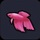
■ 물 온천 흙탕물에 방류할 수 있다
※ 텅 빈 섬 온천 / 오카무르섬 상층호수 이외의 민물 / 문부르크섬 론달키아 민물에서 낚시
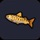
■ 물에 방류할 수 있다
※ 몬조라섬 민물 / 문부르크섬 민물에서 낚시
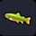
■ 물에 방류할 수 있다
※ 문부르크섬 론달키아 이외의 민물에서 낚시
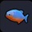
■ 물 온천 흙탕물에 방류할 수 있다
※ 텅 빈 섬 흙탕물 / 몬조라섬 흙탕물에서 낚시
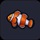
■ 온천 바닷물에 방류할 수 있다
※ 텅 빈 섬 바다 / 몬조라섬, 잡아잡아섬 바위 이외의 심해에서 낚시
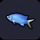
■ 바닷물에 방류할 수 있다
※ 오카무르섬 바다, 바위의 심해에서 낚시
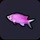
■ 바닷물에 방류할 수 있다
※ 몬조라섬 바다, 바위 이외의 심해 / 오카무르섬 바뒤 이외의 바다, 바위의 심해에서 낚시
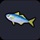
■ 바닷물에 방류할 수 있다
※ 텅 빈 섬, 오카무르섬 바다 / 몬조라섬, 잡아잡아섬 바위 이외의 바다겡서 낚시
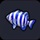
■ 바닷물에 방류할 수 있다
※ 텅 빈 섬 바다 / 몬조라섬, 잡아잡아섬 바위의 바다 / 오카무르섬 바위의 바다, 심해에서 낚시
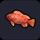
■ 바닷물에 방류할 수 있다
※ 텅 빈 섬 바다 / 몬조라섬, 오카무르섬 바위의 바다, 심해 / 잡아잡아섬 바위의 바다에서 낚시
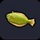
■ 바닷물에 방류할 수 있다
※ 문부르크섬 바위 이외의 바다 / 둥둥섬 바다, 심해에서 낚시
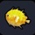
■ 바닷물에 방류할 수 있다
※ 문부르크섬 섬의 북구 심해, 바위 이외의 바다에서 낚시
■ 바닷물에 방류할 수 있다
※ 오카무르섬 바위 이외의 바다, 심해 / 문부르크섬 바위의 바다, 심해에서 낚시
■ 바닷물에 방류할 수 있다
※ 오카무르섬 바위 이외의 바다, 심해 / 문부르크섬 바다, 심해에서 낚시
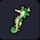
■ 바닷물에 방류할 수 있다
※ 몬조라섬, 오카무르섬 바위의 바다, 심해에서 낚시
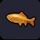
■ 물 온천 흙탕물 바닷물에 방류할 수 있다
※ 몬조라섬 민물 / 문부르크섬 눈보라 지역 이외의 민물에서 낚시
■ 물 온천에 방류할 수 있다
※ 몬조라섬 민물 / 오카무르섬 상층호수 민물 / 문부르크섬 눈보라 지역, 론달키아 이외의 민물에서 낚시
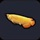
■ 물 온천에 방류할 수 있다
※ 텅 빈 섬 온천에서 낚시
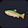
■ 물 바닷물에 방류할 수 있다
※ 텅 빈 섬, 몬조라섬, 오카무르섬 상층호수 민물 / 문부르크섬 눈보라 지역의 민물, 바다에서 낚시
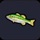
■ 물 흙탕물에 방류할 수 있다
※ 텅 빈 섬, 몬조라섬 흙탕물에서 낚시
■ 온천 바닷물에 방류할 수 있다
※ 몬조라섬, 문부르크섬 바위 이외의 바다에서 낚시
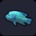
■ 온천 바닷물에 방류할 수 있다
※ 몬조라섬 바위의 바다 / 오카무르섬 바위 이외의 바다에서 낚시
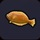
■ 바닷물에 방류할 수 있다
※ 몬조라섬 심해, 바위의 바다 / 오카무르섬 바위 이외의 심해에서 낚시
■ 바닷물에 방류할 수 있다
※ 텅 빈 섬 바다 / 몬조라섬, 잡아잡아섬 바위 이외의 바다 / 문부르크섬 바위의 바다, 심해에서 낚시
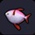
■ 바닷물에 방류할 수 있다
※ 몬조라섬, 오카무르섬 바위 이외의 심해에서 낚시
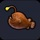
■ 바닷물에 방류할 수 있다
※ 몬조라섬 바위 이외의 심해 / 문부르크섬 바위의 바다, 심해에서 낚시
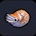
■ 바닷물에 방류할 수 있다
※ 둥둥섬 바다, 심해에서 낚시
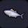
■ 바닷물에 방류할 수 있다
※ 문부르크섬 바위 이외의 심해에서 낚시
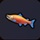
■ 물 바닷물에 방류할 수 있다
※ 문부르크섬 눈보라 지역의 민물, 바다에서 낚시
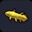
■ 물 온천 바닷물에 방류할 수 있다
※ 문부르크섬 론달키아 민물에서 낚시
■ 바닷물에 방류할 수 있다
※ 오카무르섬, 문부르크섬 바위 이외의 심해에서 낚시
■ 바닷물에 방류할 수 있다
※ 문부르크섬 최북단 해저동굴 입구의 심해에서 낚시
■ 바닷물에 방류할 수 있다
※ 몬조라섬 죽은 세계수 근처 바다에서 낚시

■ "망망대해에 가다" 연주 가능
■ 수비력：2
■ 색 변경 가능
실 2
■ 색 변경 가능
기름 2
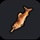
목재 1
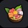
■ 요리를 담을 수 있다
나무 식기 1
※ 40종의 물고기를 낚으면 레시피 획득
산호 기둥 1 진주 조개 1
용암석 1 말미잘 1
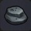
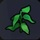
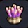
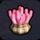
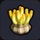
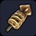
■ 조리시간 : 30초 ■ 만복 30% 회복 ■ HP 5 회복 방어력 상승
■ 재료 크기에 따라 고급(만복+5%) 최고급(만복+10%) 이 있습니다
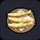
■ 조리시간 : 45초 ■ 만복 25% 회복 ■ HP 25 회복 방어력 상승
밀 1
기름 1
■ 조리시간 : 100초 ■ 만복 75% 회복 ■ HP 25 회복 방어력 상승
■ 재료 크기에 따라 고급(만복+5%) 최고급(만복+10%) 이 있습니다
도미 1
참치 1
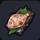
■ 조리시간 : 30초 ■ 만복 30% 회복 ■ HP 5 회복 방어력 상승
■ 재료 크기에 따라 고급(만복+5%) 최고급(만복+10%) 이 있습니다
■ 조리시간 : 100초 ■ 만복 65% 회복 ■ HP 10 회복 수중 버프(호흡, 수영 속도)
■ 재료 크기에 따라 고급(만복+5%) 최고급(만복+10%) 이 있습니다
청새치 1
버터 1
■ 조리시간 : 100초 ■ 만복 60% 회복 ■ HP 20 회복 수중 버프(호흡, 수영 속도)
■ 재료 크기에 따라 고급(만복+5%) 최고급(만복+10%) 이 있습니다
된장 1
깨끗한물 1(갈증 항아리)
■ 조리시간 : 100초 ■ 만복 35% 회복 ■ HP 10 회복 수중 버프(호흡, 수영 속도)
곡물 1
버터 1
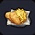
■ 조리시간 : 100초 ■ 만복 30% 회복 ■ HP 15 회복 수중 버프(호흡, 수영 속도)
감자 1
기름 1
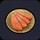
■ 조리시간 : 200초 ■ 만복 25% 회복 ■ HP 5 회복 수중 버프(호흡, 수영 속도)
■ 재료 크기에 따라 고급(만복+5%) 최고급(만복+10%) 이 있습니다